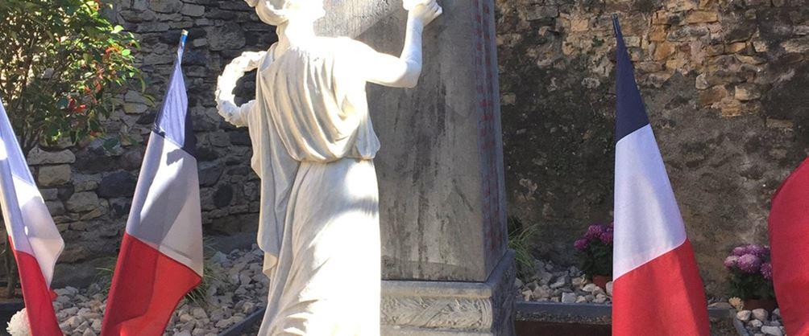

La crise sanitaire du Coronavirus a plongé les Français non seulement dans l'angoisse et dans le sentiment d'être peu à peu dépossédés de leur liberté mais également dans le doute sur l'aptitude réelle de nos dirigeants dans la conduite des affaires du pays dans des situations difficiles. La crise sanitaire actuelle, par sa durée et du fait qu'elle occupe en permanence la totalité de l'espace médiatique, occulte le vrai danger qui est, en fait, lié à l'immigration de culture islamique qui menace à terme la France alors que la situation devenue dramatique nécessiterait une véritable révolution, une véritable rupture avec les discours habituels et avec l'action ou plus précisément l'absence d'action appropriée qui lui est opposée jusqu'ici.
Il ne sert, en effet, à rien de projeter nos soldats sur des théâtres extérieurs pour nous protéger si nos dirigeants renoncent, devant l'évidence, à nommer l'ennemi et à le combattre sur notre sol. Nous ne pouvons plus accepter que la vie de nos compatriotes continue d'être sacrifiée sur l'autel de l'on ne sait quelle idéologie, de l'on ne sait quel progressisme qui efface le sentiment d'appartenance à une collectivité, à un pays, à une nation, en fait à une patrie. On peut d'ailleurs constater que le projet de loi attendu sur le séparatisme – dont le titre d'abord modifié puis complètement changé, ne désignera absolument pas la menace – ne sera pas à la hauteur de l'enjeu crucial car ne présentant que des mesures cosmétiques. Or, face à la guerre qui nous a été déclarée, face à la situation tragique et aux drames à venir que le président de la République refuse de voir, c'est de sauver la France dont il s'agit aujourd'hui.
Alors, je voudrais vous dire que c'est précisément dans les moments difficiles et devant les dangers que se révèle l'amour de la patrie qui doit à présent rassembler les Français. C'est en réveillant ce sentiment d'appartenance à une nation, cet amour du pays qui est le nôtre, ce sentiment d'affection sacrée qui s'appelle simplement le patriotisme que nous pourrons amorcer le renouveau de la France.
Le patriotisme c'est donc notre avenir. C'est l'avenir car face au défi qui nous est posé aujourd'hui par l'islam sur notre propre sol invoquer en permanence la République n'a aucun sens et il faut au contraire en appeler au sacré. Le patriotisme, amour de la patrie, comporte toujours cette composante de sacré car il engage tout l'humain dans l'homme, c'est à dire la raison, le sentiment et l'instinct. En définitive, le patriotisme, amour de la patrie, relève de la tradition, de la terre et des morts. Et comme je l'ai déjà dit, ces morts nous commandent.
Tout le sens de mon engagement repose dans la dénonciation du renoncement de nos dirigeants politiques alors que lorsqu'on s'est vu confier la responsabilité, la charge ô combien lourde mais certainement exaltante de diriger un pays, une nation, on doit être guidé par le sens du bien commun. Ce sens du bien commun doit se traduire par la passion du bien public, la passion de l'intérêt de l'État et de la nation, le souci du peuple qui doit être permanent car le maintien d'une cohérence interne est essentiel, d'une part pour pouvoir avancer uni vers un même projet, d'autre part pour sa continuité historique légitime. Il doit se traduire par le désir de rassembler les Français dans ce projet, l'envie de grandeur pour tous et, en fait, l'envie de retrouver la grandeur oubliée de cette France que nous chérissons, et donc le sens de l'Histoire et le devoir de longue mémoire. C'est cela le bien commun. Malmené cependant depuis longtemps et perverti, voire saboté aujourd'hui, il doit se traduire par la passion pour la France, et à présent plus que jamais, la passion pour une France souveraine qui soit une force, une énergie, une volonté et une ardente envie de liberté.
Il est révoltant d'entendre le président de la République, s'exprimant lors de la très récente assemblée générale de l'ONU, vanter la « juste » mondialisation en dénonçant la violence des populismes. La violence des populismes ! Parce que vouloir défendre son identité menacée c'est violent, alors que les agressions, les violences et meurtres racistes et anti-français qui se multiplient ce ne sont que des incivilités ! De tels propos sont indignes.
Et cette ardente envie de liberté, eh bien c'est, tout en acceptant un monde ouvert, de pouvoir choisir de rester ce que nous sommes, un peuple enraciné dans une civilisation, une culture, une spiritualité, une histoire, des traditions et donc de pouvoir refuser la double-peine, notre génocide par substitution et l'islamisation du pays. C'est pourquoi pour rendre sa grandeur à la France et sa fierté à son peuple, il faut être conscient que l'Histoire est tragique et que le destin d'une nation ne peut pas s'affranchir à certains moments critiques de démolitions, de renversements ordonnés, puis de réparations, de reconstructions et d'embellissements. Nous sommes dans ce moment critique aujourd'hui, à cette croisée des chemins où le choix de la voie à prendre est capital et exige de ne pas reculer. Il est temps de prendre en main notre destin et de ne plus rester spectateurs ni accepter l'inacceptable.
Partager cette page